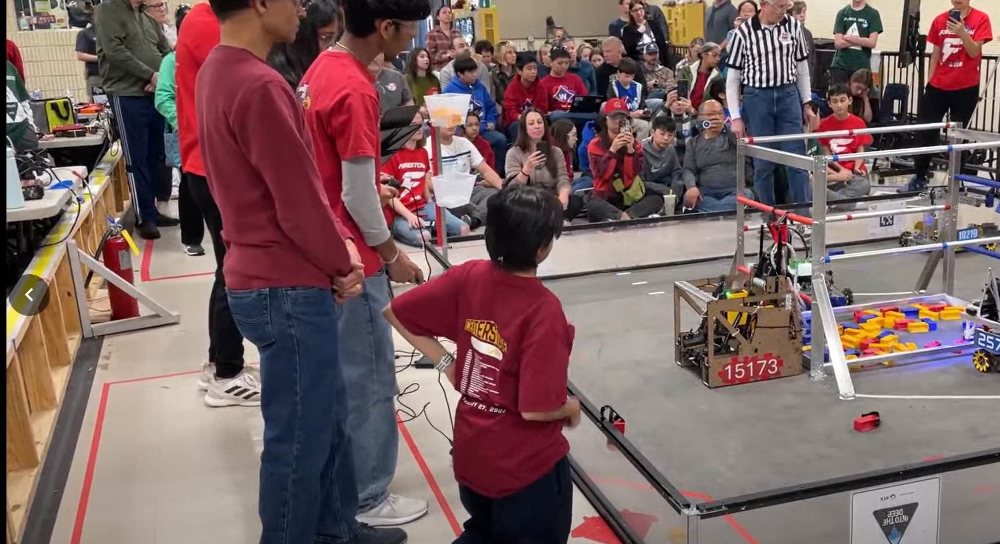

FIRST Tech Challenge · Lead Programmer · Team #15173
Aug 2023 – May 2025
Robotic Eagles: Autonomous Navigation, Vision & Subsystems
Directed the complete event-driven Java software stack and autonomous control systems for competitive FTC robot ("In Too Deep"). Replaced Pure Pursuit with a point-based waypoint pathing algorithm, integrated 4D cosine similarity color detection, implemented 3-wheel odometry localization, and developed lift power-draw stall monitoring—earning the FTC Motivate Award and 6th place at the 2024 State Championship.

Autonomous Navigation & Pathing Algorithms
- Point-Based Waypoint Pathing: Replaced the vector-based Pure Pursuit system with an agile point-based pathing algorithm, utilizing customizable waypoint proximity thresholds and adjustable error tolerances for rapid non-critical traversal and millimeter-accurate final positioning.
- Field-Centric Mecanum Drive & PID: Programmed field-centric driving for 96mm mecanum wheels driven 1:1 by GoBilda 435 RPM motors; integrated PID controllers into the drivetrain to adjust motor power continuously based on sensor feedback and eliminate drift.
- 3-Wheel Odometry Localization: Designed custom 3D-printed spring-tensioned odometry pods using stretched surgical tubing; derived positional and angular equations from encoder values with calculus mentorship from Mr. Yang to ensure reliable autonomous tracking.
Intake Automation, Vision & Subsystem Dynamics
- 4D Cosine Similarity Color Detection: Formulated an advanced mathematical color classification algorithm in 4D vector space (RGBL: red, green, blue, and light intensity), computing cosine similarity against pre-determined vectors to automate sample intake and prevent alliance penalties.
- Lift Power-Draw Monitoring: Engineered dynamic current/power-draw spike monitoring on the 435 RPM string-driven linear slide lift to reliably detect when a specimen is hung on the high rung and automatically trigger claw release.
- 2-Bar Linkage Extendo & Active Intake: Modeled torque efficiency through stress analysis on horizontal 2-bar linkage arms; integrated compliant wheel intake with 3D-printed boot wheels and custom timing belts.